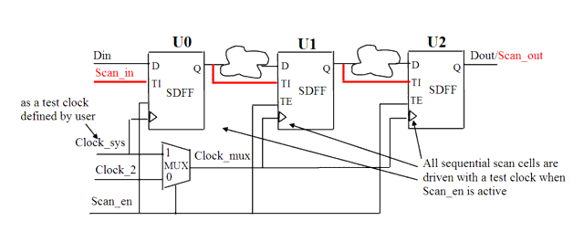

| Description | All flip-flops not driven by a test clock are eliminated from the scan path. This either decreases test coverage or forces the test engineer to use sequential automatic test pattern generation (ATPG). |
| Policy | DESIGN |
| Ruleset | DFT |
| Language | VHDL/Verilog |
| Type | Hardware |
| Severity | Error |
This is an example of valid Verilog code, followed by a circuit diagram that illustrates the correct approach:
module ntl_dft25_top(Clock_sys, Clock_2, Scan_en, Scan_in, Din, Dout); input Clock_sys, Clock_2, Scan_en, Scan_in, Din; // Clock_sys is a system clock, // Leda provides a way to specify test clocks (see user Guide). // Clock_sys is a test clock defined by user output Dout; wire net_01, net_02, net_11, net_22 ; wire Clock_mux1; ... MUX I0(.A(Clock_2), .B(Clock_sys), .S(Scan_en), .Z(Clock_mux)): // mux the clocks of scan FFs to the test clock when test_mode // (scan-enable) is active // Scan DFF - SDFF ... SDFF U0(.D(Din), .CP(Clock_sys), .TI(Scan_in), .TE(Scan_en), .Q(net_01)); SDFF U1(.D(net_11), .CP(Clock_mux), .TI(net_01), .TE(Scan_en), .Q(net_02)); SDFF U2(.D(net_22), .CP(Clock_mux), .TI(net_02), .TE(Scan_en), .Q(Dout)); endmodule